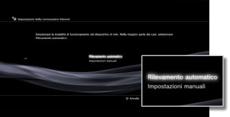
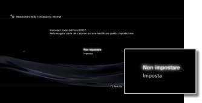
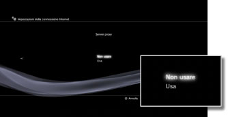
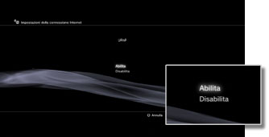

Impostazioni > Impostazioni di rete > Impostazioni della connessione Internet (impostazioni avanzate)
Impostazioni della connessione Internet (impostazioni avanzate)
Se non è possibile collegarsi a Internet con le impostazioni di base, modificare le impostazioni come occorre. Regolare ogni elemento come occorre per il proprio particolare ambiente di rete.
1. |
Selezionare |
|---|---|
2. |
Selezionare [Impostazioni della connessione Internet]. |
3. |
Selezionare [Personalizzate]. |
 (Impostazioni) >
(Impostazioni) >  (Impostazioni di rete).
(Impostazioni di rete).Metodo di connessione
È possibile impostare il metodo per la connessione a Internet. Questa impostazione è disponibile solo nei sistemi PS3™ dotati della funzione LAN wireless.
| Connessione via cavo | Effettuare una connessione via cavo mediante un cavo Ethernet |
|---|---|
| Wireless | Effettuare una connessione wireless mediante LAN wireless |
Impostazioni WLAN
Consente di impostare il SSID per il punto di accesso. Questa impostazione è disponibile solo nei sistemi PS3™ che sono dotati della funzione WLAN.

| Scandisci | Consente di ricercare un punto di accesso vicino. Selezionare questa opzione se non si conosce il SSID del punto di accesso. Il sistema rileva i punti di accesso vicini e visualizza informazioni sul SSID e le impostazioni di sicurezza. |
|---|---|
| Inserisci manualmente | Consente di specificare il punto di accesso immettendo manualmente il SSID con una tastiera. Selezionare questa impostazione quando si conosce il SSID. |
| Automatiche | Consente di utilizzare la funzione di impostazione automatica del punto di accesso. Questa impostazione è disponibile solo nelle regioni in cui vengono venduti sistemi PS3™ che supportano la funzione. Selezionare questa impostazione quando si utilizza un punto di accesso che supporta la configurazione automatica. Seguire le istruzioni sullo schermo. |
Impostazione di sicurezza WLAN
Consente di impostare una chiave crittografica per un punto di accesso. Questa impostazione è disponibile solo nei sistemi PS3™ che sono dotati della funzione WLAN.

| Nessuno | Consente di non impostare una chiave crittografica. |
|---|---|
| WEP | Consente di impostare una chiave crittografica. È possibile impostare la chiave crittografica nella schermata successiva. La chiave crittografica viene visualizzata come una serie di asterischi. |
| WPA-PSK / WPA2-PSK |
Impostazione dell'autenticazione
Queste impostazioni sono disponibili solo nei sistemi PS3™ venduti in Corea e sono disponibili solo nei sistemi PS3™ dotati della funzione WLAN.
| Nessuno | Consente di non impostare le informazioni di autenticazione. |
|---|---|
| EAP-MD5 | Consente di non impostare le informazioni di autenticazione quando si utilizzano servizi WLAN pubblici. Immettere l'ID utente e la password nella schermata successiva. Per maggiori dettagli, consultare le informazioni fornite dal provider di servizi WLAN pubblici. |
Modalità di funzionamento Ethernet
Consente di impostare la velocità di trasferimento dati e il metodo di funzionamento Ethernet. Solitamente si seleziona [Rilevamento automatico].

| Rilevamento automatico | Consente di configurare automaticamente le impostazioni di base. |
|---|---|
| Impostazioni manuali | Consente di impostare manualmente la velocità di trasferimento dati e il metodo di funzionamento Ethernet. |
Impostazione dell'indirizzo IP
Consente di impostare il metodo per ottenere un indirizzo IP quando si effettua la connessione a Internet.
| Automatica | Consente di utilizzare l'indirizzo IP assegnato dal server DHCP. È possibile immettere il nome host del server DHCP nella schermata successiva. |
|---|---|
| Manuale | Consente di impostare manualmente l'indirizzo IP. È possibile immettere i valori per l'indirizzo IP, la maschera di sottorete, il router predefinito e i DNS primario e secondario nella schermata successiva. |
| PPPoE | Consente la connessione a Internet mediante PPPoE. È possibile immettere l'ID utente e la password nella schermata successiva. |
DHCP
Consente di impostare il nome dell'host DHCP. La selezione normale è [Non impostare].

| Non impostare | Consente di non impostare il nome dell'host DHCP. |
|---|---|
| Imposta | Consente di impostare il nome dell'host DHCP. |
Impostazione del DNS
Consente di impostare il server DNS.
| Automatica | Consente di acquisire automaticamente l'indirizzo del server DNS. |
|---|---|
| Manuale | Consente di immettere manualmente l'indirizzo del server DNS. |
MTU
Consente di configurare il valore MTU utilizzato per la trasmissione dati. Solitamente si seleziona [Automatica].
| Automatica | Consente di impostare automaticamente il valore MTU. |
|---|---|
| Manuale | Consente di specificare le dimensioni massime dei pacchetti di dati (in byte) che possono essere inviati in una trasmissione. |
Server proxy
Consente di impostare il server proxy da utilizzare.

| Non usare | Consente di non utilizzare un server proxy. |
|---|---|
| Usa | Consente di utilizzare un server proxy. È possibile immettere l'indirizzo e il numero di porta del server proxy nella schermata successiva. |
UPnP
Consente di abilitare o disabilitare la funzione UPnP (Universal Plug and Play).

| Abilita | Consente di abilitare la funzione UPnP. |
|---|---|
| Disabilita | Consente di disabilitare la funzione UPnP. |
Nota
Se si imposta [Disabilita], è possibile che la comunicazione con terzi venga limitata quando si utilizzano la funzione di chat vocale/video o le funzioni di comunicazione dei giochi.